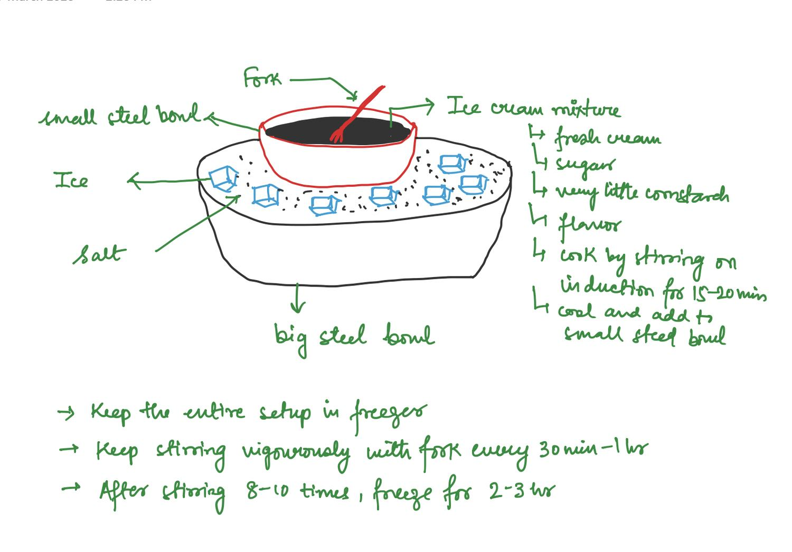

Sweet
Ice Cream
Spicemalai
WrittenMarch 2026
FromHer handwriting
Tagsdessert · ice-cream · no-machine · technique
Labels on the drawing:
- fork
- small steel bowl
- Ice cream mixture
- Ice
- Salt
- big steel bowl
Ice cream mixture
- fresh cream
- sugar
- very little cornstarch
- flavor
- cook by stirring on induction for 15-20 mins
- cool and add to small steel bowl
- Keep the entire setup in freezer
- Keep stirring vigorously with fork every 30 min - 1 hr
- After stirring 8-10 times, freeze for 2-3 hr

Sharing its spices